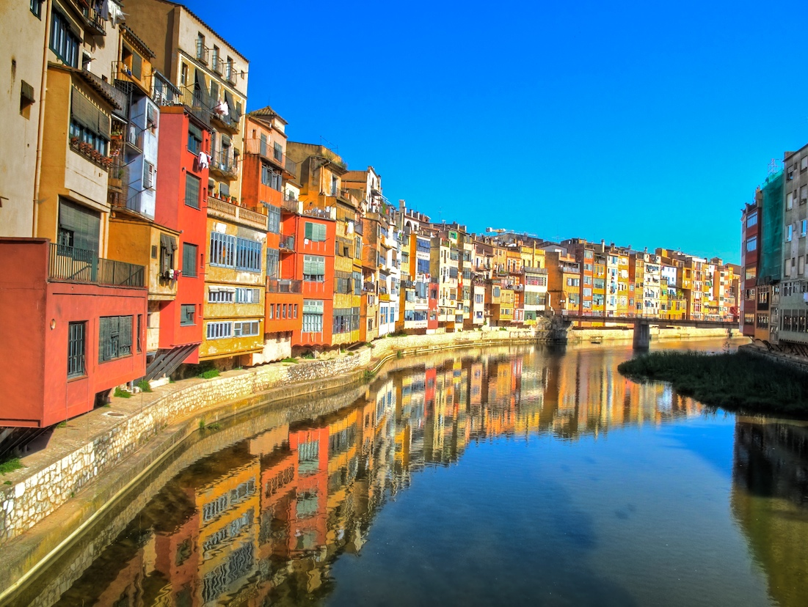

Heathrow → Barcelona → Girona
01Thursday 20 August 2026 · arrival day
Touch down,
slowly.
Travel day
The first night is about one thing: getting everyone from Heathrow to Girona fed, settled and ready for a proper start tomorrow.
Lunch & lounge · HeathrowAfter security, the two Platinum Amex cardholders can use eligible lounge access before boarding. Check the selected lounge's guest and child rules.
British Airways LHR → BCNDirect flight, 2 hr 20 min; scheduled arrival 18:35 local time.
Car pickup & transferAllow about 1 hr 20 to 30 min from Barcelona Airport to Girona, plus the car handover.
Dinner · GironaKeep it simple near the stay: pizza, tapas or takeaway rather than a long first-night booking.
Practical notes
ParkingPre-arrange a space outside Girona’s pedestrian old quarter or use the stay’s recommended car park.
Lounge planCheck the Amex lounge finder, opening hours, guest allowance and child policy. Plan an adult handover if the whole group cannot enter together.
Pack / bookCabin-bag snacks, medicines and sleepwear. Confirm late check-in and the hire-car child-seat plan.